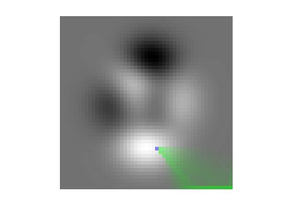

influenceMap
Influence map for pixel flow in a DEM
Contents
Description
I = influenceMap(E, T, i, j) calculates an influence map, I, for the DEM matrix, E. T is the pixel flow matrix as computed by flowMatrix. i and j are vectors containing the row and column coordinates of the starting pixels. Each element of the matrix I contains the amount of pixel flow received from the starting pixels.
I = influenceMap(E, T, BW) uses the nonzero pixels in the mask image BW as the starting pixels for the calculation.
Note: Connected groups of NaN pixels touching the border are treated as having no contribution to flow.
Reference
Tarboton, "A new method for the determination of flow directions and upslope areas in grid digital elevation models," Water Resources Research, vol. 33, no. 2, pages 309-319, February 1997.
Example
E = peaks; R = demFlow(E); T = flowMatrix(E, R); I = influenceMap(E, T, 38, 28); visMap(I, E, 38, 28)